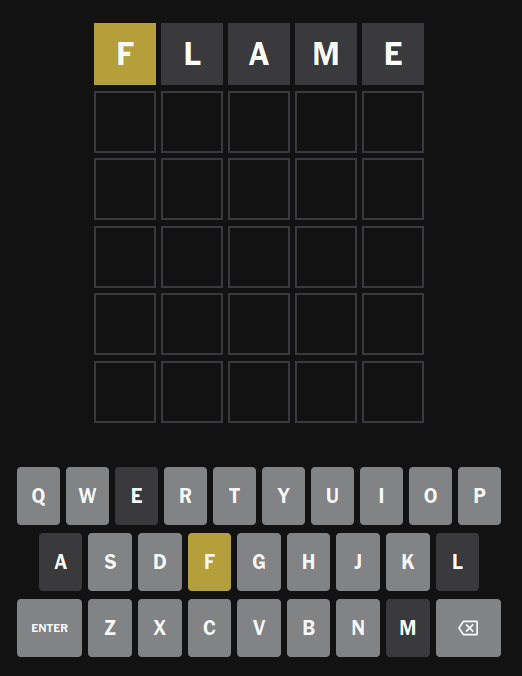
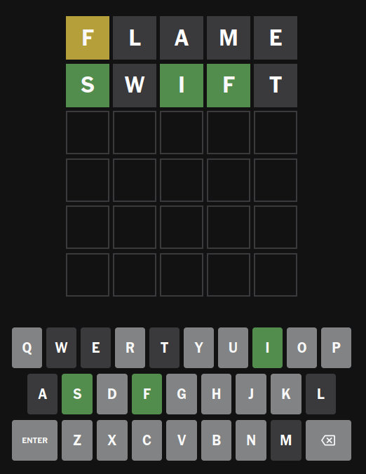
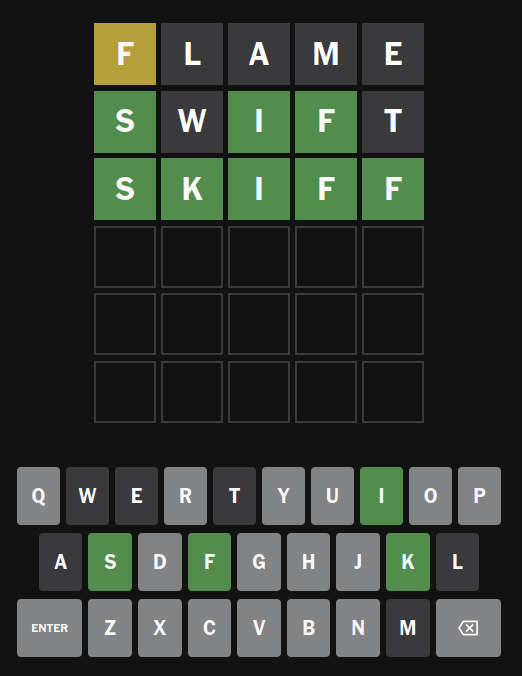

Lecture Notes - Mon Aug 12, 2024
Please see lesson Introduction to Unix Command Line.
The log
Here is the log of all the commands tried in the class.
$ echo hello world
hello world
$
$
$ echo hello world
hello world
$ date
Monday 12 August 2024 11:33:05 AM IST
$ date
Monday 12 August 2024 11:33:07 AM IST
$ figlet hello world
_ _ _ _ _
| |__ ___| | | ___ __ _____ _ __| | __| |
| '_ \ / _ \ | |/ _ \ \ \ /\ / / _ \| '__| |/ _` |
| | | | __/ | | (_) | \ V V / (_) | | | | (_| |
|_| |_|\___|_|_|\___/ \_/\_/ \___/|_| |_|\__,_|
$ seq
$ seq 5
1
2
3
4
5
$ figlet a*b
_
__ ___/\_| |__
/ _` \ / '_ \
| (_| /_ _\ |_) |
\__,_| \/ |_.__/
$ ls
circle Makefile moving-circle.c
circle.c moving-circle moving-circle.mp4
circle.svg moving-circle2 moving-circle.svg
frames moving-circle2.c sketch
$ figlet a * b
_ _ _ _
__ _ ___(_)_ __ ___| | ___ ___(_)_ __ ___| | ___ ___
/ _` | / __| | '__/ __| |/ _ \ / __| | '__/ __| |/ _ \ / __|
| (_| | | (__| | | | (__| | __/ | (__| | | | (__| | __/| (__
\__,_| \___|_|_| \___|_|\___| \___|_|_| \___|_|\___(_)___|
_ _ __
___(_)_ __ ___| | ___ _____ ____ _ / _|_ __ __ _ _ __ ___ ___ ___
/ __| | '__/ __| |/ _ \ / __\ \ / / _` | | |_| '__/ _` | '_ ` _ \ / _ \/ __|
| (__| | | | (__| | __/_\__ \\ V / (_| | | _| | | (_| | | | | | | __/\__ \
\___|_|_| \___|_|\___(_)___/ \_/ \__, | |_| |_| \__,_|_| |_| |_|\___||___/
|___/
__ __ _ __ _ _
| \/ | __ _| | _____ / _(_) | ___
| |\/| |/ _` | |/ / _ \ |_| | |/ _ \
| | | | (_| | < __/ _| | | __/
|_| |_|\__,_|_|\_\___|_| |_|_|\___|
_ _ _
_ __ ___ _____ _(_)_ __ __ _ ___(_)_ __ ___| | ___
| '_ ` _ \ / _ \ \ / / | '_ \ / _` |_____ / __| | '__/ __| |/ _ \
| | | | | | (_) \ V /| | | | | (_| |_____| (__| | | | (__| | __/
|_| |_| |_|\___/ \_/ |_|_| |_|\__, | \___|_|_| \___|_|\___|
|___/
_ _ _ ____
_ __ ___ _____ _(_)_ __ __ _ ___(_)_ __ ___| | ___|___ \
| '_ ` _ \ / _ \ \ / / | '_ \ / _` |_____ / __| | '__/ __| |/ _ \ __) |
| | | | | | (_) \ V /| | | | | (_| |_____| (__| | | | (__| | __// __/
|_| |_| |_|\___/ \_/ |_|_| |_|\__, | \___|_|_| \___|_|\___|_____|
|___/
_ _ _ ____
_ __ ___ _____ _(_)_ __ __ _ ___(_)_ __ ___| | ___|___ \ ___
| '_ ` _ \ / _ \ \ / / | '_ \ / _` |_____ / __| | '__/ __| |/ _ \ __) | / __|
| | | | | | (_) \ V /| | | | | (_| |_____| (__| | | | (__| | __// __/ | (__
|_| |_| |_|\___/ \_/ |_|_| |_|\__, | \___|_|_| \___|_|\___|_____(_)___|
|___/
_ _ _
_ __ ___ _____ _(_)_ __ __ _ ___(_)_ __ ___| | ___ ___
| '_ ` _ \ / _ \ \ / / | '_ \ / _` |_____ / __| | '__/ __| |/ _ \ / __|
| | | | | | (_) \ V /| | | | | (_| |_____| (__| | | | (__| | __/| (__
|_| |_| |_|\___/ \_/ |_|_| |_|\__, | \___|_|_| \___|_|\___(_)___|
|___/
_ _ _
_ __ ___ _____ _(_)_ __ __ _ ___(_)_ __ ___| | ___ _ __ ___
| '_ ` _ \ / _ \ \ / / | '_ \ / _` |_____ / __| | '__/ __| |/ _ \ | '_ ` _ \
| | | | | | (_) \ V /| | | | | (_| |_____| (__| | | | (__| | __/_| | | | | |
|_| |_| |_|\___/ \_/ |_|_| |_|\__, | \___|_|_| \___|_|\___(_)_| |_| |_|
|___/
_ _
_ __ | || |
| '_ \| || |_
| |_) |__ _|
| .__/ |_|
|_|
_ _ _
_ __ ___ _____ _(_)_ __ __ _ ___(_)_ __ ___| | ___ _____ __
| '_ ` _ \ / _ \ \ / / | '_ \ / _` |_____ / __| | '__/ __| |/ _ \ / __\ \ / /
| | | | | | (_) \ V /| | | | | (_| |_____| (__| | | | (__| | __/_\__ \\ V /
|_| |_| |_|\___/ \_/ |_|_| |_|\__, | \___|_|_| \___|_|\___(_)___/ \_/
|___/
_ _ _ _
__ _ ___| | _____| |_ ___| |__ | |__
/ _` | / __| |/ / _ \ __/ __| '_ \ | '_ \
| (_| | \__ \ < __/ || (__| | | | | |_) |
\__, | |___/_|\_\___|\__\___|_| |_| |_.__/
|___/
$ figlet 'a * b'
_
__ _ __/\__ | |__
/ _` | \ / | '_ \
| (_| | /_ _\ | |_) |
\__,_| \/ |_.__/
$ seq 5
1
2
3
4
5
$ seq 5 | figlet
_
/ |
| |
| |
|_|
____
|___ \
__) |
/ __/
|_____|
_____
|___ /
|_ \
___) |
|____/
_ _
| || |
| || |_
|__ _|
|_|
____
| ___|
|___ \
___) |
|____/
$
$
$ /usr/games/cow
cowsay cowthink
$ /usr/games/cowsay hello world
_____________
< hello world >
-------------
\ ^__^
\ (oo)\_______
(__)\ )\/\
||----w |
|| ||
$ /usr/games/cowsay -f tux hello world
_____________
< hello world >
-------------
\
\
.--.
|o_o |
|:_/ |
// \ \
(| | )
/'\_ _/`\
\___)=(___/
$ seq 5 | /usr/games/cow
cowsay cowthink
$ seq 5 | /usr/games/cowsay
___________
< 1 2 3 4 5 >
-----------
\ ^__^
\ (oo)\_______
(__)\ )\/\
||----w |
|| ||
$ seq 5 | /usr/games/cowsay -n
___
/ 1 \
| 2 |
| 3 |
| 4 |
\ 5 /
---
\ ^__^
\ (oo)\_______
(__)\ )\/\
||----w |
|| ||
$ seq 2 | figlet | /usr/games/cowsay -n
_________
/ _ \
| / | |
| | | |
| | | |
| |_| |
| |
| ____ |
| |___ \ |
| __) | |
| / __/ |
| |_____| |
\ /
---------
\ ^__^
\ (oo)\_______
(__)\ )\/\
||----w |
|| ||
$ echo hello | figlet | /usr/games/cowsay -n
________________________
/ _ _ _ \
| | |__ ___| | | ___ |
| | '_ \ / _ \ | |/ _ \ |
| | | | | __/ | | (_) | |
| |_| |_|\___|_|_|\___/ |
\ /
------------------------
\ ^__^
\ (oo)\_______
(__)\ )\/\
||----w |
|| ||
$
$ figlet hello
_ _ _
| |__ ___| | | ___
| '_ \ / _ \ | |/ _ \
| | | | __/ | | (_) |
|_| |_|\___|_|_|\___/
$ figlet
hello
_ _ _
| |__ ___| | | ___
| '_ \ / _ \ | |/ _ \
| | | | __/ | | (_) |
|_| |_|\___|_|_|\___/
world
_ _
__ _____ _ __| | __| |
\ \ /\ / / _ \| '__| |/ _` |
\ V V / (_) | | | | (_| |
\_/\_/ \___/|_| |_|\__,_|
$ /usr/games/cowsay -n
hello
world
_______
/ hello \
\ world /
-------
\ ^__^
\ (oo)\_______
(__)\ )\/\
||----w |
|| ||
$
$ figlet hello
_ _ _
| |__ ___| | | ___
| '_ \ / _ \ | |/ _ \
| | | | __/ | | (_) |
|_| |_|\___|_|_|\___/
$ figlet -f slant hello
__ ____
/ /_ ___ / / /___
/ __ \/ _ \/ / / __ \
/ / / / __/ / / /_/ /
/_/ /_/\___/_/_/\____/
$ figlet -f lean hello
_/ _/ _/
_/_/_/ _/_/ _/ _/ _/_/
_/ _/ _/_/_/_/ _/ _/ _/ _/
_/ _/ _/ _/ _/ _/ _/
_/ _/ _/_/_/ _/ _/ _/_/
$ pwd
/home/anand/github/anandology/isi-fcp/computing
$ cd
$ pwd
/home/anand
$ cd /home/anand/github/anandology/isi-fcp/computing
$
$ ls
circle Makefile moving-circle.c sketch
circle.c moving-circle moving-circle.mp4
circle.svg moving-circle2 moving-circle.svg
frames moving-circle2.c numbers.sh
$ cat numbers.sh
n=$1
seq $n | figlet$
$
$ cat numbers.sh
n=$1
seq $n | figlet
$ cat
hello
hello
$ ls -l
total 168
-rwxrwxr-x 1 anand anand 16976 Jul 30 21:54 circle
-rw-rw-r-- 1 anand anand 196 Jul 29 00:16 circle.c
-rw-rw-r-- 1 anand anand 6682 Aug 5 10:55 circle.svg
drwxrwxr-x 2 anand anand 32768 Aug 6 17:51 frames
-rw-rw-r-- 1 anand anand 575 Aug 6 17:46 Makefile
-rwxrwxr-x 1 anand anand 17152 Aug 6 17:50 moving-circle
-rwxrwxr-x 1 anand anand 17024 Aug 6 17:32 moving-circle2
-rw-rw-r-- 1 anand anand 433 Aug 6 17:32 moving-circle2.c
-rw-rw-r-- 1 anand anand 1034 Aug 6 18:11 moving-circle.c
-rw-rw-r-- 1 anand anand 40176 Aug 6 17:52 moving-circle.mp4
-rw-rw-r-- 1 anand anand 359 Aug 6 17:36 moving-circle.svg
-rw-rw-r-- 1 anand anand 21 Aug 12 12:07 numbers.sh
lrwxrwxrwx 1 anand anand 9 Aug 5 10:55 sketch -> ../sketch
$ whoami
anand
$
$ figlet sketch
_ _ _
___| | _____| |_ ___| |__
/ __| |/ / _ \ __/ __| '_ \
\__ \ < __/ || (__| | | |
|___/_|\_\___|\__\___|_| |_|
$ figlet -f slant sketch
__ __ __
_____/ /_____ / /______/ /_
/ ___/ //_/ _ \/ __/ ___/ __ \
(__ ) ,< / __/ /_/ /__/ / / /
/____/_/|_|\___/\__/\___/_/ /_/
$ figlet -f slant sketch > sketch.txt
$ pwd
/home/anand/github/anandology/isi-fcp/computing
$ ls
circle Makefile moving-circle.c sketch
circle.c moving-circle moving-circle.mp4 sketch.txt
circle.svg moving-circle2 moving-circle.svg
frames moving-circle2.c numbers.sh
$ cat sketch.txt
__ __ __
_____/ /_____ / /______/ /_
/ ___/ //_/ _ \/ __/ ___/ __ \
(__ ) ,< / __/ /_/ /__/ / / /
/____/_/|_|\___/\__/\___/_/ /_/
$ seq
$ seq 1000000 > 1m.txt
$ ls -l *.txt
-rw-rw-r-- 1 anand anand 6888896 Aug 12 12:15 1m.txt
-rw-rw-r-- 1 anand anand 198 Aug 12 12:12 sketch.txt
$ wc -l 1m.txt
1000000 1m.txt
$ cat sketch.txt
__ __ __
_____/ /_____ / /______/ /_
/ ___/ //_/ _ \/ __/ ___/ __ \
(__ ) ,< / __/ /_/ /__/ / / /
/____/_/|_|\___/\__/\___/_/ /_/
$ /usr/games/cowsay -n < sketch.txt
__________________________________
/ __ __ __ \
| _____/ /_____ / /______/ /_ |
| / ___/ //_/ _ \/ __/ ___/ __ \ |
| (__ ) ,< / __/ /_/ /__/ / / / |
| /____/_/|_|\___/\__/\___/_/ /_/ |
\ /
----------------------------------
\ ^__^
\ (oo)\_______
(__)\ )\/\
||----w |
|| ||
$ cat numbers.sh
n=$1
seq $n | figlet
$ /usr/games/cowsay -n < numbers.sh
_________________
/ n=$1 \
\ seq $n | figlet /
-----------------
\ ^__^
\ (oo)\_______
(__)\ )\/\
||----w |
|| ||
$
$ seq 2000 | tail -5
1996
1997
1998
1999
2000
$ echo 1234567 | sed 's/\(...\)+/\1,/'
1234567
$ echo 1234567 | sed 's/\(...\)+/g\1,/'
1234567
$ echo 1234567 | sed 's/\(...\)/g\1,/'
g123,4567
$ echo 1234567 | sed 's/\(...\)/\1,/'
123,4567
$ echo 1234567 | sed 's/\(...\)/\1,/g'
123,456,7
$ echo 1234567 | sed 's/.*\(...\)/\1,/g'
567,
$ echo 1234567 | sed 's/\(...\)+/\1,/g'
1234567
$ sudo apt-get -y install wbritish
[sudo] password for anand:
Sorry, try again.
[sudo] password for anand:
Reading package lists... Done
Building dependency tree... Done
Reading state information... Done
wbritish is already the newest version (2020.12.07-2).
0 upgraded, 0 newly installed, 0 to remove and 706 not upgraded.
$
$ ls
1m.txt frames moving-circle2.c numbers.sh
circle Makefile moving-circle.c sketch
circle.c moving-circle moving-circle.mp4 sketch.txt
circle.svg moving-circle2 moving-circle.svg
$
$ cat moving-circle.c
#include <sketch.h>
#include <unistd.h>
int frame_count = 0;
// saves each frame as file frames/0000.svg, frames/0001.svg etc.
void save_frame()
{
char filename[100];
// format the file name and save it into the variable filename
sprintf(filename, "frames/%04d.svg", frame_count);
// save the sketch into the frame filename
save_sketch(filename);
// increment the frame count, so that the next call to this function
// will write to a different file
frame_count++;
printf("saved %s\n", filename);
}
int main()
{
float r = 50;
float y = 0;
float x = -300 + r;
while (x < 300)
{
// clear everything that is drawn so far
clear_sketch();
// draw one circle
draw_circle(x, y, r);
// save the sketch
// since we are doing this in a loop, the svg extension of vscode will
// update the image everytime the file is updated.
save_frame();
// move the circle by 10 pixels to the right
x++;
}
}
$ grep draw moving-circle.c
// clear everything that is drawn so far
// draw one circle
draw_circle(x, y, r);
$ grep draw_ moving-circle.c
draw_circle(x, y, r);
$ seq 1000000 | grep 5 | wc -l
468559
$ seq 1000000 | grep '5.*5' | head
55
155
255
355
455
505
515
525
535
545
$ seq 1000000 | grep '5.*5' | wc -l
114265Solving Wordle with command-line
Wordle is a word game where you guess a word. We are going to try solving it using unix command-line tools.
$ wc -l /usr/share/dict/words
104334 /usr/share/dict/words
$ grep '^ice' /usr/share/dict/words
ice
iceberg
iceberg's
icebergs
icebound
icebox
iceboxes
icebox's
icebreaker
icebreaker's
icebreakers
icecap
icecap's
icecaps
iced
ice's
icesLet’s find all the 5 letter words in the dictionary.
$ grep '^.....$' /usr/share/dict/words | head
ABC's
ABM's
AFAIK
AFC's
AMD's
ANSIs
ANZUS
AOL's
ASCII
ASL's
$ grep '^.....$' /usr/share/dict/words | wc -l
7044There are quite many of them. Let’s start with a guess. What shall we start with? Ok, FLAME!

How many 5-letter words are there that have letter f in them?
$ grep '^.....$' /usr/share/dict/words | grep f | wc -l
469The letter L, A, M and E are not present in our word. Let’s try to skip all the words that have any of these characters.
$ grep '^.....$' /usr/share/dict/words | grep f | grep -v '[lame]' | wc -l
123That is still quite a lof of them. Lets see some of those options.
$ grep '^.....$' /usr/share/dict/words | grep f | grep -v '[lame]' | head
Acuff
Afros
Buffy
Corfu
Duffy
Khufu
Knopf
Rufus
Swift
biffsI’m going to try one of them. I’ll go with Swift.

Now that we know correct letters in three positions and 6 letters that are not present, let’s see what all words are available.
$ grep '^s.if.$' /usr/share/dict/words | grep -v '[lamewt]' | head
skiff
sniff
$ grep '^s.if.$' /usr/share/dict/words | grep -v '[lamewt]'
skiff
sniffLet’s try with the first one skiff.

Yay! We solved Worle with command-line!